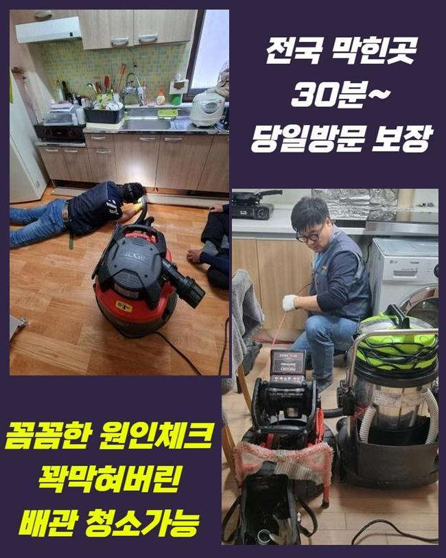
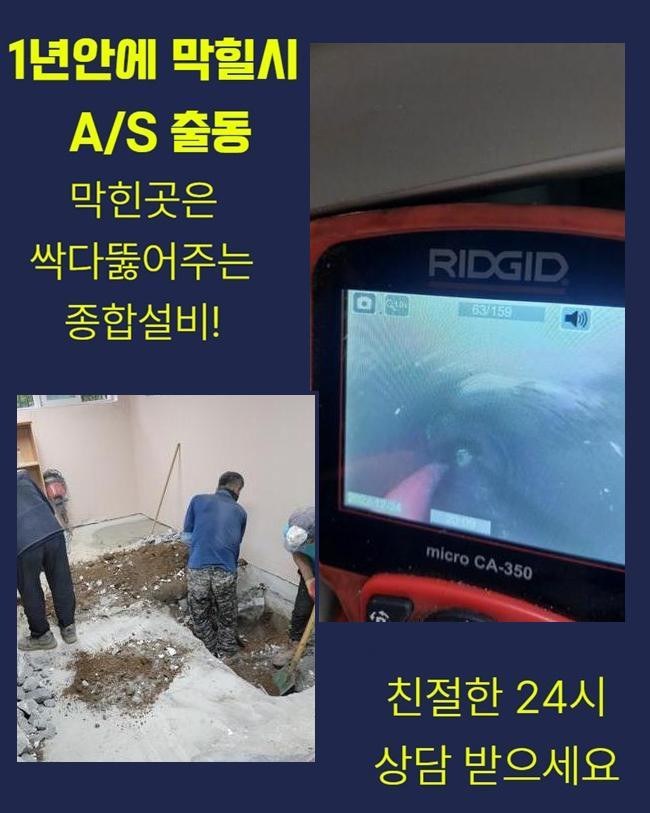
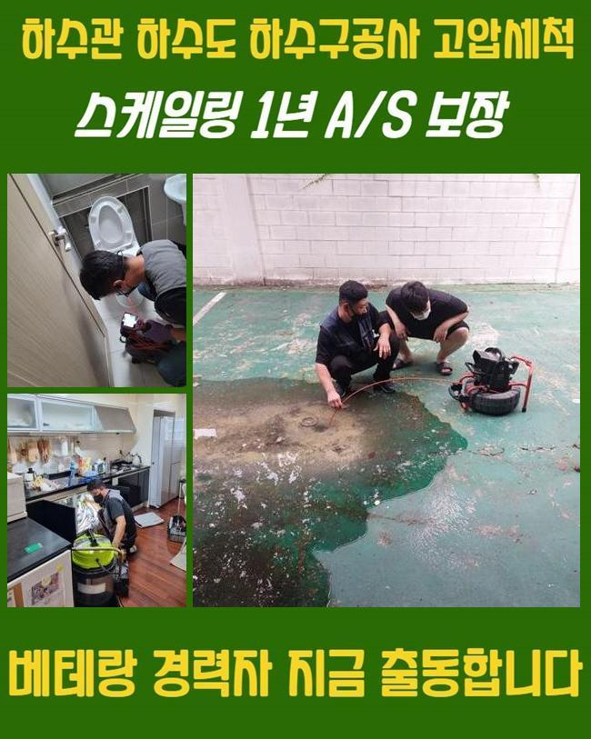
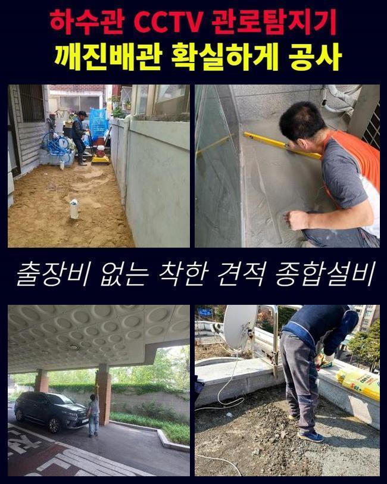
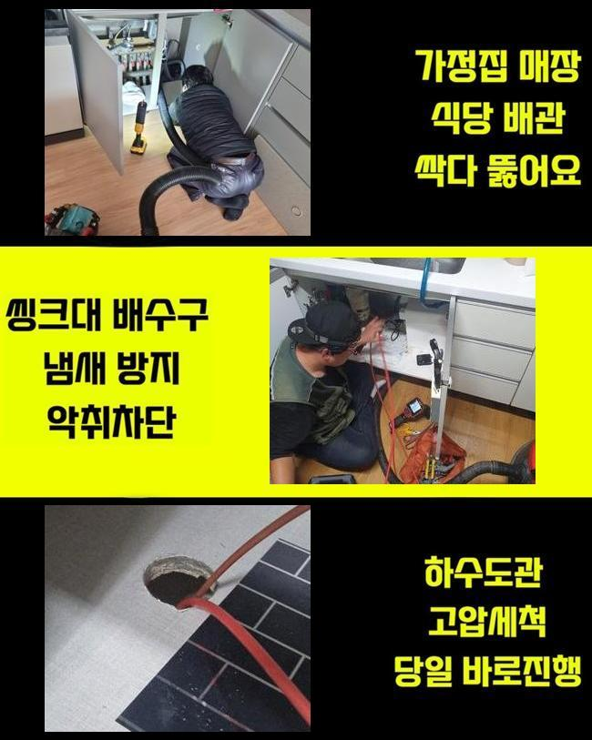

🏠 물왕동세탁실막힘 정왕동 집수정청소 통수전문
용인 물왕동 싱크대막힘 전문 시공 후기

📋 작업 개요
- 위치: 용인 물왕동, 물왕동, 용인
- 서비스 유형: 싱크대막힘, 하수구막힘, 배관막힘, 집수정막힘, 역류해결, 배관청소, 고압세척
- 작업 일시: 2025. 6. 1. 0:16
- 업체명: 하수구수사대 (010-5615-2118)
🔍 문제 상황
물왕동세탁실막힘 정왕동 집수정청소 통수전문
평소에 어렵지않게 야기되는 배수정체는 공간별로 원인들이 상이하게 등장하는데요
문제들이 나타나게되면 곤란함은 각론하더라도 수습하기 위해서 대처해보고자 생각하실거에요
이와같은 문제들이 나타나면 배수관로를 무턱대고 조치하다보면 이상증세들이 더 커지게되는 경우가 많은데요
가벼운 배수정체는 클린용액과 같은 것으로도 개선이 될 가능성도 있겠지만 그렇지않다면 금방 개선이 되기엔 역부족이에요
방문드렸던 예시를 소개해드리며 문제 상황과 관련한 얘기들을 말씀드릴게요
방문드리니 싱크대쪽이 막힌 탓에 수도를 쓰지를 못하고 계신 상황들이였습니다
고객분은 간편한 도구들로 이용하며 개선시키려다가 반대로 넘치면서 역류증상이 발생되었습니다
더군다나 내측에는 찌꺼기들이 많이 있는 까닭에 배출되지 않는 형상에서 위와같이 무리하게 힘을 주면 솟구치며 잔해물들이 올라오게됩니다
이유를 파악하지 못하고 검증되지 않은 조치들을 실시하면 반대로 이와같은 문제들이 심해지기에 신경써주셔야해요

🔎 원인 분석
💡 전문가 진단: 정밀 진단 장비를 사용하여 슬러지의 고착 여부를 판명하고 타격/세척 작업을 실시했습니다.
저희업체는 작업 시점에 계획들을 짠 다음 근원지들을 찾고 이물질들을 제거시키고 테스트과정까지 단계별로 밟아나가는 까닭에 2차적인 피해없이 안정적으로 시정합니다
최초에 작업에 착수하면 석션장치를 씁니다 해당 장치의 경우 내측에 고인 하수들을 빨아당기는 방법으로 청소하고 있어요
원인들을 파악하는데에 있어서 해당 작업들을 이행하는 목적은 내시경기기를 투입해주기 위한것이였어요
저희들에게 문의를 하시는 시점에서는 이미 이와같은 문제들이 생긴 이후라서 내측은 오염원들로 꽉 차게 된 상황들이 펼쳐집니다
그래서 바로 내시경기기를 투입해도 오수가 많은 상태라면 점검이 불가합니다
이런 문제들을 바로 잡고자 석션장비로 청소를 실시합니다
석션기기로 청소해보고 수습되었으면하는 심정으로 통수시켰으나 시원하게 안내려갔어요
그래서 내시경의 선을 넣고 문제들의 시발점을 찾고 적절한 절차로 제거작업을 수행해야되겠습니다
심층부의 진단을 통하여 붉게 나오는 구간을 인지했죠 이와같이 불그스름한 부분은 기름성분이라 아시면 되는데요
기름의 경우 점성때문에 관로로 흘러가면 벽측에 붙으며 문제라 함은 조금씩 굳는것이죠
고착된 모습들은 내시경장치로 확인할 수 있는데 협소한 하수관에서 붉어진 상태로 나타나죠

🔧 작업 과정
구조와 관련된 사안은 안보였던 상태였고 하수도의 이물들만 관찰되었어요 구간별로 기름들이 붙어있었고 돌과 같이 뒤섞인 잔해물들도 보이는 상황들이였습니다
이같이 흡착된 슬러지들은 석션장치로도 흡입되질 못해서 타 장비를 이용한 방법들로 진행됩니다
이같은 배수관의 결함들을 타파하는 방법들은 샤프트기기를 통하여서 청소해주는 단계가 요구된다고 알면 되겠는데요
주방 용품과 같은것이 흘러내려가면 조금 다른 방식들로 접근하나 음식물때문에 생겨난 막힘증세는 이와같이 샤프트장치들을 통해 청소를 할 수 있는데요
체인은 사슬처럼 자리하고 있고 사슬들이 회전하면서 분쇄들이 진행되죠
이처럼 청소하고 석션장치를 통하여 흡입해주면 배수관로에 부유하는 찌꺼기는 없어져요
샤프트기 운용을 충분하게 반복하면서 안쪽엔 있는 잔해물들을 없애주는게 목표라고 생각하시면 됩니다
샤프트장치들을 바닥에 위치한 관로에 투입해 컨디션 복구를 이행해보았어요
씽크대관로의 자리잡은 슬러지를 없애면서 덩어리들까지 떨궈내고 석션작업을 이행해 30분가량 수행해보았습니다
세심하게 진행되지 못한다면 추후 다른 이물들이 달라붙게되며 또다른 주방배수구가 막히게되는 까닭이 될 수 있습니다
곧장 작업 시에 청결히 만들어주면 예방까지도 가능하겠습니다
씽크대가 정체되는 원리는 의외로 간단할 수 있어요 기름슬러지가 생겨나고 끈적이게되는 특성때문에 오염물이 달라붙게되고 내부통로에서 크기를 불려나가죠
이같은 순서로 해당 증세가 야기되어서 기름때들이 안보일만큼 깨끗하면 잔해물들이 흡착될 가능성들이 저하될 수 있어요
전문가가 깔끔하게 시정해도 평소의 관리들이 행해지지 않는다면 쌓이게되며 통수오류가 발생될 수 있어요
식자재의 경우엔 별로 없더라도 전용 봉지에 버린 후 폐기물로 배출시키면 되고 배수구로는 들어가지 않게 해주세요
액체의 경우에는 분리하시는게 어렵게 느껴지실거에요 기름의 경우엔 상온에선 단단히 굳게되니 기름들만 제거해서 분리배출해주시면 됩니다


✅ 작업 완료
이와같이 설명을 드리면서 잔재들을 청소했습니다 세척하고나니 깨끗한 배수관의 모습으로 복구되었죠
내시경을 이용한 뒤엔 또 물들이 잘 빠져나가는지 고객분과 체크해보기에 이르렀어요
배수관에선 역류증세들이 발생될만큼 오류상태가 심각수준이였으나 작업 후에는 싱크대부분에서 안정적으로 하수들이 흐르는걸 겉에서 보일정도로 개선해냈죠
이것처럼 평시에는 빈번히 생겨나는게 막히는 문제죠
싱크대 막힘증세는 자연스레 나아지질 못하여 신속하게 저희업체와 안정적으로 해결하셨으면 좋겠어요!



⚠️ 주방 싱크대 배관 막힘 예방 수칙
- ✅ 기름기가 묻은 식기나 프라이팬은 설거지 전 키친타올로 반드시 기름때를 닦아내세요.
- ✅ 주기적으로 싱크대 개수대에 뜨거운 물을 가득 받아 한 번에 내려 배관 내부 기름을 씻어내세요.
- ✅ 배수구 거름망을 미세한 필터로 사용하시고 음식물 찌꺼기가 틈으로 새어 들지 않게 관리하세요.
- ✅ 베이킹소다와 식초를 뜨거운 물과 함께 일주일에 한 번씩 부어주면 배관 살균과 막힘 예방에 좋습니다.
💡 핵심 정리
- 확실한 장비 작업(내시경 점검 및 샤프트 스케일링)으로 원인을 뿌리 뽑습니다.
- 작업 후 1년 이내에 동일한 부위 재발 시 100% 무상 A/S 서비스를 보장합니다.
- 서울 · 경기 · 인천 전 지역에 24시간 언제든 긴급 출동할 수 있도록 항시 대기 중입니다.
❓ 자주 묻는 질문 (FAQ)
🚨 용인 물왕동 싱크대막힘 문제로 고민이신가요?
정확한 원인 진단과 확실한 시공으로 재발 없는 해결을 약속드립니다.
24시간 긴급 출동 | 서울 · 경기 · 인천 전지역 | 1년 내 재발 시 무상 A/S